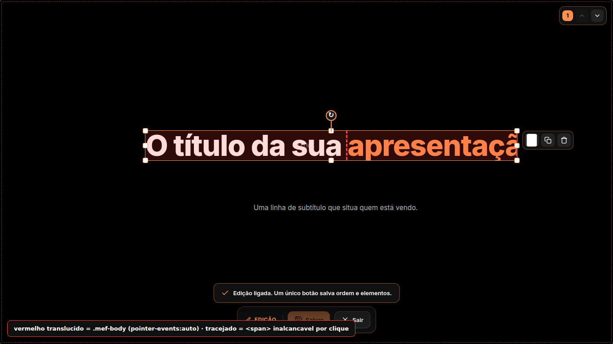

| # | ID | sev | estado | título | reprodução | testes | veredito |
|---|---|---|---|---|---|---|---|
| 15 | 6UHJ | high · P1 | open · triaging | O overlay de seleção engole o clique e nunca desseleciona, travando a edição até o F5 | deterministic · 10/10 | 0 rep · 0 reg | pendente |
Com um elemento selecionado no modo E, a moldura de seleção cobre a caixa inteira
dele com um div que captura ponteiro (#mef-overlay .mef-body,
pointer-events:auto). O manipulador global onDocDown descarta qualquer
clique que caia em chrome antes de tocar na seleção, então clicar na moldura nunca troca
nem limpa a seleção, só inicia um arraste do elemento antigo. Tudo que está debaixo da moldura
fica inalcançável por clique, e elementos aninhados (um <span> dentro do
<h1> selecionado) ficam inalcançáveis de forma permanente.

.mef-body, a zona que captura o clique.
Tracejado = o <span class="accent"> que mora dentro do <h1>
selecionado e não pode ser clicado.mover → salvar → redimensionar → salvar → recortar →
salvar completou em 5 decks. O que se reproduz é o estado em que ele fica depois de salvar:
elemento ainda selecionado, moldura parada por cima do conteúdo. Confirmar com o relator antes de
fechar.
Nenhuma aresta canônica: contexto com um bug só. A seta pontilhada não é relação
tipada, e sim uma marca de que o mesmo sintoma relatado pelo usuário já foi tratado uma vez, por causa
diferente (textCtx e body.mef-text-editing presos sem blur),
antes de existir o registro de bugs. Aquela auto-cura foi verificada nesta sessão em 50/50 cópias
de mira-edit-free.js, então este bug não é regressão dela.
| bug | seção | exigência | veredito |
|---|---|---|---|
| 6UHJ | mira-edit-livre/sdd/selecao-de-elemento.md#rf-04 |
Must: trocar a seleção ao clicar em outro elemento | pendente |
| 6UHJ | mira-edit-livre/sdd/selecao-de-elemento.md#rf-05 |
Must: limpar a seleção clicando em área vazia ou com Esc | pendente |
A fonte canônica é templates/authoring/mira-edit-free.js, mas o arquivo
está copiado em cerca de 50 decks sob decks/, examples/ e
tests/. Corrigir o template não conserta deck já instalado: a propagação é
npx mira-animator edit <deck> mais versão publicada, que é o que a closure policy
package exige.